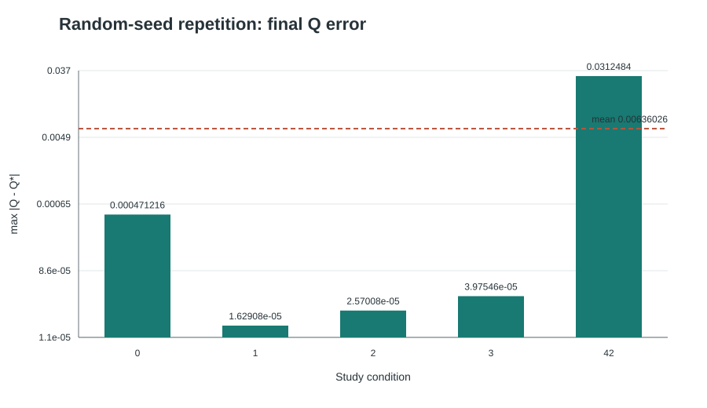
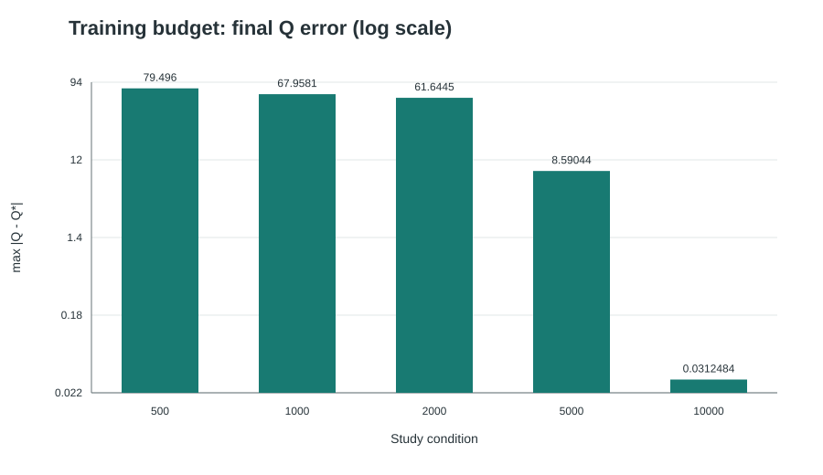
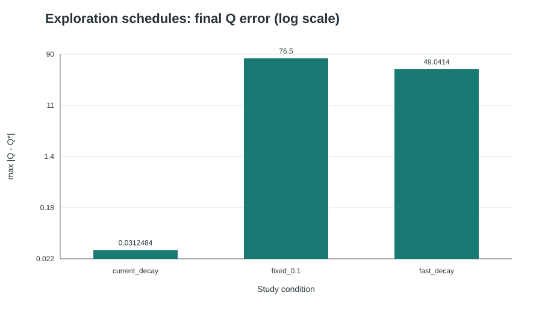

Q-learning in a Six-State Environment
The figures and Q-tables below are generated by the submitted training script. Their CSV source data is included under results/.
Environment model
The state is the robot's current region, one of A, B, C, D, E, F. An action selects an adjacent region. The selected region becomes the next state deterministically. Moves to non-adjacent regions are excluded from the available actions.
The assignment figure does not provide a formal adjacency table. This experiment uses the following explicit, bidirectional interpretation, including the direct connection between B and C:
| Current state | Adjacent states and available actions |
|---|---|
| A | E |
| B | C, D, F |
| C | B, D |
| D | B, C, E |
| E | A, D, F |
| F | B, E |
A valid move to a non-target state gives a reward of -1. A move that enters the target state gives +100 instead. Entering the target ends the episode immediately, so no action is selected from that state afterward. Each episode also has a 30-move limit; reaching the limit without the target truncates the episode and does not grant the target reward.
Experiment configurations
| Configuration | Start | Target / terminal state |
|---|---|---|
| Original | C | F |
| Changed | A | C |
Both configurations use the same adjacency, transition rule, reward values, and move limit. A target state's physical neighbors remain in the adjacency table because the target changes between experiments; its available action set is empty only while it is the current experiment's terminal state.
As a check on the declared graph, a shortest route is C → B → F in the original configuration and A → E → D → C in the changed configuration. These are deductions from the model, not training results.
Learning method and training settings
All legal state-action values start at zero. In each episode, an ε-greedy policy chooses a random legal move with probability ε and a move with the highest current Q-value otherwise; ties between best moves are broken randomly. The update is Q(s,a) ← Q(s,a) + α [r + γ max Q(s',·) - Q(s,a)]. On entry to the target, the future-value term is zero. A step-limit truncation ends collection for that episode but is not treated as a goal transition.
Both experiments use α = 0.2, γ = 0.9, 10,000 episodes, and random seed 42. ε decreases linearly from 0.4 to 0.1 over the first 12,000 episodes, so it is about 0.15 at the final episode of this run. Each episode starts at its configured start state and lasts at most 30 moves. The implementation uses only the Python standard library.
Experimental results
Each upper plot shows every legal Q-value, measured after every episode, with start-state actions highlighted. The lower plot shows the largest absolute change among all legal entries in the Q-table during that episode. A zero in the lower plot can mean that recently visited values did not change; it alone cannot prove every state-action value is optimal. The tables report action visit counts to show how much evidence supports each estimate.
Original: C to F
10,000 of 10,000 episodes reached the target. The largest single-episode Q-table change in the last 500 episodes was 2.68833e-06; the least-visited legal action was used 48 times. These observations do not establish a convergence guarantee.

results/baseline/convergence.csv.| State | Action / next state | Initial Q | Final Q | Visits |
|---|---|---|---|---|
| A | E | 0.000000 | 88.997248 | 48 |
| B | C | 0.000000 | 79.100000 | 1079 |
| B | D | 0.000000 | 79.100000 | 1131 |
| B | F | 0.000000 | 100.000000 | 9349 |
| C | B | 0.000000 | 89.000000 | 9795 |
| C | D | 0.000000 | 79.100000 | 1576 |
| D | B | 0.000000 | 89.000000 | 1764 |
| D | C | 0.000000 | 79.100000 | 292 |
| D | E | 0.000000 | 89.000000 | 724 |
| E | A | 0.000000 | 79.068752 | 48 |
| E | D | 0.000000 | 79.099991 | 73 |
| E | F | 0.000000 | 100.000000 | 651 |
Changed: A to C
10,000 of 10,000 episodes reached the target. The largest single-episode Q-table change in the last 500 episodes was 0; the least-visited legal action was used 203 times. These observations do not establish a convergence guarantee.

results/start_A_goal_C/convergence.csv.| State | Action / next state | Initial Q | Final Q | Visits |
|---|---|---|---|---|
| A | E | 0.000000 | 79.100000 | 11147 |
| B | C | 0.000000 | 100.000000 | 1683 |
| B | D | 0.000000 | 89.000000 | 207 |
| B | F | 0.000000 | 79.100000 | 207 |
| D | B | 0.000000 | 89.000000 | 940 |
| D | C | 0.000000 | 100.000000 | 8317 |
| D | E | 0.000000 | 79.100000 | 996 |
| E | A | 0.000000 | 70.190000 | 1147 |
| E | D | 0.000000 | 89.000000 | 10046 |
| E | F | 0.000000 | 79.100000 | 1153 |
| F | B | 0.000000 | 89.000000 | 1157 |
| F | E | 0.000000 | 79.100000 | 203 |
Ablation studies
These studies keep the C-to-F environment and reward model fixed while varying one source of experimental uncertainty at a time. The result tables and plots are generated by code/run_ablations.py; the original per-episode data is preserved in results/ablations/.
1. Random-seed repetition: C to F
Five independent runs use seeds 0, 1, 2, 3, and 42. All hyperparameters and the 10,000-episode budget remain fixed. Success rate is the fraction of episodes reaching F. The Q error is the maximum absolute difference between the learned final table and an independently computed dynamic-programming reference Q*. It is a diagnostic, not an input to training.
| Seed | Success rate | Last-500 return | Last-500 steps | Max Q error | Min visits |
|---|---|---|---|---|---|
| 0 | 1 | 98.678 | 2.322 | 0.0004712 | 70 |
| 1 | 1 | 98.704 | 2.296 | 1.629e-05 | 69 |
| 2 | 1 | 98.66 | 2.34 | 2.57e-05 | 69 |
| 3 | 1 | 98.696 | 2.304 | 3.975e-05 | 65 |
| 42 | 1 | 98.636 | 2.364 | 0.03125 | 48 |
Across the five seeds, the mean final max Q error was 0.00636 with sample standard deviation 0.01391. The standard deviation and the minimum action-visit count show that seed choice affects coverage of less frequently reached regions, even though the success rate is saturated.
| Metric | Mean | Sample standard deviation | Min | Max |
|---|---|---|---|---|
| success_rate | 1 | 0 | 1 | 1 |
| mean_return_last_500 | 98.6748 | 0.0275536 | 98.636 | 98.704 |
| mean_steps_last_500 | 2.3252 | 0.0275536 | 2.296 | 2.364 |
| final_q_max_abs_error | 0.00636026 | 0.0139142 | 1.62908e-05 | 0.0312484 |
| min_action_visits | 64.2 | 9.25743 | 48 | 70 |

results/ablations/random_seeds.csv and results/ablations/random_seed_summary.csv.2. Training budget: seed 42
Keeping seed 42 and all other settings fixed, the budget varies from 500 to 10,000 episodes. This separates early apparent success from learning of the full table. The error falls from 79.5 at 500 episodes to 0.03125 at 10,000 episodes, while success is already 100% at 500 episodes. The success metric therefore cannot by itself establish that the full table has been learned.
| Episodes | Success rate | Last-500 return | Last-500 steps | Max Q error | Min visits |
|---|---|---|---|---|---|
| 500 | 1 | 98.06 | 2.94 | 79.5 | 2 |
| 1000 | 1 | 98.126 | 2.874 | 67.96 | 5 |
| 2000 | 1 | 98.114 | 2.886 | 61.64 | 6 |
| 5000 | 1 | 98.416 | 2.584 | 8.59 | 19 |
| 10000 | 1 | 98.636 | 2.364 | 0.03125 | 48 |

results/ablations/training_budget.csv.3. Exploration-rate ablation: seed 42
The current schedule is compared with fixed ε = 0.1 and a fast decay from 0.4 to 0.01 over 2,000 episodes. All three runs use 10,000 episodes. In this run, the current schedule has max Q error 0.03125 with a minimum of 48 visits per action; fixed ε has error 76.5 and only 3 visits for its least-sampled action; fast decay has error 49.04 and 6 minimum visits. All three still reach F in every episode. This directly shows why apparent task success can be confused with complete state-action coverage.
| Strategy | ε settings | Success rate | Last-500 steps | Max Q error | Min visits |
|---|---|---|---|---|---|
| Current: 0.4 to 0.1 over 12000 episodes | 0.4 → 0.1 / 12000 | 1 | 2.364 | 0.03125 | 48 |
| Fixed epsilon = 0.1 | 0.1 → 0.1 / 1 | 1 | 2.192 | 76.5 | 3 |
| Fast decay: 0.4 to 0.01 over 2000 episodes | 0.4 → 0.01 / 2000 | 1 | 2.01 | 49.04 | 6 |

results/ablations/exploration_rates.csv.Interpretation and limitations
These ablations separate three sources of uncertainty: random initialization of the sampling trajectory, insufficient training budget, and the exploration schedule. The comparison is limited by the small deterministic graph, the manually interpreted adjacency, the fixed reward scale, and the use of one target and one start state in the ablations. Q* is available here only because this six-state deterministic environment is simple enough for an independent dynamic-programming check; in a larger unknown environment, such a reference may not be available. Observed stabilization and high return therefore remain empirical evidence rather than a guarantee of optimality.